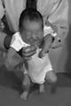
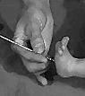
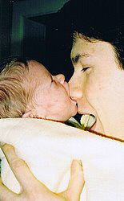

Understanding Infant Reflexes: Your Baby's Boot Camp
Infant reflexes develop in the boot camp of the womb to help your baby survive after birth. They are a
great indicator of development and create a wonderful opportunity for motherly interaction.
Your baby will emphasize some of these 10 infant reflexes more than others, so don't be alarmed if a few
reflexes don't seem as strong as the rest.
Scientifically speaking, newborn reflexes are "involuntary, predictable muscle and postural tone shifts
that are age-specific and important to normal motor development between pre-natal and 9 months. These
movement pattern shifts can be spontaneous or elicited by external stimuli." (Crutchfield and Barnes)
Translation? They occur without thought in the muscles and posture of a newborn from womb to 9 months old.
They happen on their own (like rooting) or by stimulation (like grasping). Many of these will subside
within a few months due to developing motor skills.
{Lauren shows how infant reflexes develop before birth. She's about to suck her thumb.}
Using Infant Reflexes as a Game
Use these infant reflexes as a new way of interacting with your newborn. Here are some suggestions:
practice giving her your finger or a toy to grasp and then let go (Palmar Reflex)
stroke the bottom of her foot (Plantar Reflex)
stroke the side of her foot (Babinski Reflex)
lightly touch the sides of her spinal cord (Galant Reflex)
gently pull her to a sitting position (Doll Eye's Reflex)
Moro (Startle) Reflex
The Moro, or Startle, Reflex is named after pediatrician Ernst Moro, who discovered it. It appears right
after birth and disappears around 4 months (although sometimes it can exist until 6). In it, a newborn
reacts to the sensation of falling.
This most frequently occurs when his head shifts quickly, the
temperature changes suddenly, or if he is startled by a loud noise. It is also called the Parachute
Response.
The baby will extend both arms WAY out, like he is catching himself, fingers spread wide. After this
incredibly cute physical reaction, he will most likely give an adorable pout-face and then cry.
Elena had a particularly strong Moro Reflex. Having an older (and louder) sister, she had plenty of
times to use it. Each time it was rewarded by an "Ahwwww!" and immediate cuddling.
Walking Reflex

Protective Reflex
If you place a soft cloth over your baby's eyes and nose, he will arch his head and shift
from side to side, even bringing his hands up to try to swipe the cloth away.
Even though your newborn cannot support his own weight, whenever the soles of his feet touch a surface
he will place one foot in front of the other and pretend to walk (hence Walking Reflex).
This reflex
will disappear after 3 months, only to reappear as a gross motor skill 9 months later.
So, if your friend is bragging about how advanced her "almost-walking" 1-month old son is, I would let
her enjoy a brief moment in the sun. Genius Junior will lapse back into being Average Joe soon enough.
Tonic Neck (Fencing) Reflex
Place your newborn on his tummy (or his back), with his head turned to the right. The limbs on his right
side will straighten and the
limbs on his left will curl. This will occur regardless of which direction you set his face. If you turn
him to the left, his left side will straighten and his right side will curl. This stops at 6 months.
Galant Reflex
Similar to the Fencing Reflex mentioned above, if you position your infant on her
tummy and stroke one side of her spinal cord, she will curve her body to that side.
It stops
occurring after 3-6 months, but may crop up again as "Mommy's Tickle Spot" when baby
reaches toddlerhood.
Babinski and Plantar Reflex

The Babinski reflex is when a light stroke on the side of her foot causes her toes to spread apart like a fan.
Similiarly, the Plantar Grasp is when a light touching on the inside of her foot causes her to arch her foot inward,
as if she's attempting to grasp something with her toes.
These foot infant reflexes are usually gone baby's first birthday, but similiarly to the Galant Reflex, they
tend to re-emerge as one of "Mommy's Favorite Tickle Spots" in toddlerdom.
Rooting Reflex
The Rooting and Sucking infant reflexes are vital to your newborn's ability to eat. In the Rooting Reflex,
a newborn will turn her head toward anything that strokes her cheek (even daddy's hairy chest) and try to
nurse.
Understanding this reflex is helpful to mothers who are learning to nurse. Stroke the cheek, and your
infant will turn her head right to you. Beware if her arms are loose - she can accidently stimulate her
other cheek just as easily!
Unlike the previous infant reflexes, the Rooting Reflex doesn't go away, but rather is gradually morphed
into the voluntary movement of "I'd-Like-To-Eat-Now" mouth opening around 4 months.
Sucking Reflex

{Lauren exhibits her strong sucking reflex on Daddy's nose.}
This ensures your baby will know how to get the nutrition she will need after birth. This also doesn't go
away, but is turned into a voluntary movement at around 2 months.
Basically, she will suck on anything that touches the roof of her mouth. This could be a nipple, a finger, and even, as demonstrated in the picture, Daddy's nose.
Infant Sucking Reflex There are two stages to sucking:
Expression Stage
Milking Stage
In the Expression Stage, the nipple is placed between the child's lips and touches her
palate (the roof of her mouth). The sucking reflex causes her to press the tip of her tongue on it,
making a "nipple sandwich" between the top of her mouth and the tip of her tongue.
In the Milking Stage, the middle of the tongue moves back and forth across the nipple
and areola (the darker-toned skin encircling the nipple). Her esophagus then pulls on the tip of the
nipple, sucking out the milk.
If your infant has a strong sucking reflex she may require a pacifier for soothing. She has an intense
instinctual desire to suck on something (and she will find something).
Try not to soothe her with your breast if she's not hungry. If you do, you will train her to receive comfort
only from your breast (which means a LOT of sleepless nights for you).
Palmar Grasp
The Palmar Grasp reflex occurs when you place your finger into your baby's open palm and
she grasps it. If you try to pull away, she will hold on even tighter (like those Chinese
handcuffs).
To encourage her to let go, stroke the side of her palm or the back of her hand. It generally
disappears by 6 months.
Doll's Eyes Reflex
If you allow her to grasp your forefinger with each hand (using the Palmer Grasp reflex) and pull her to
sitting, she will open her eyes upon sitting up (like an old-fashioned doll).
Her head will initially
lag back, but then she will use her shoulders (hunching up) to slowly pull her head up.
This is an excellent way to help her strengthen her neck muscles (but only do it a few times).
Not only is it important for infant reflexes to occur, it is just as important for them to go away.
A persistent newborn reflex could indicate a neurological problem. But don't worry, your pediatrician
will go over all these reflexes in your well baby visits.
In the very early months of a baby's life there is little interaction beyond feeding and diaper checks.
Knowing these infant reflexes provides at least a few activities you can do together.
The physical infant developmental stages form a five piece puzzle.
Thankfully, we can complete this puzzle without a PhD in Biology. These infant development stages are perhaps the
easiest of all the infant milestones to track.
read more...
This "ultimate" list of gross motor skills can help you identify the earliest signs of a developmental
disability in your infant. If you had to choose just one of all the infant milestones to track,
this is the one.
read more...
Teaching your infant sign language is an easy way to stimulate your baby's mind and broaden his ability to share
about the world around him. That communication translates into fewer tantrums and more smiles.
read more...